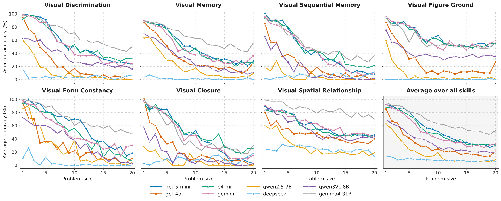
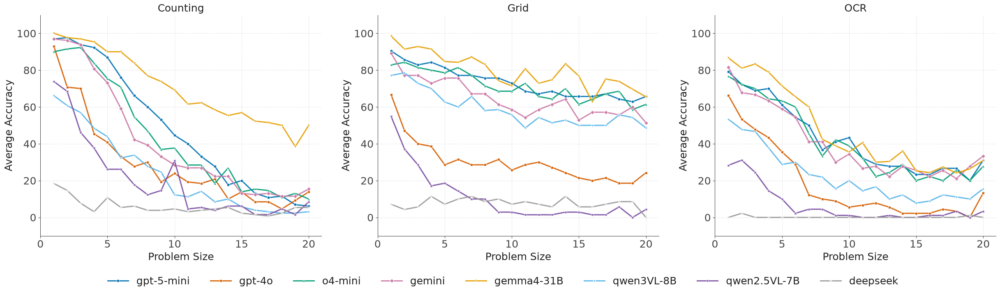
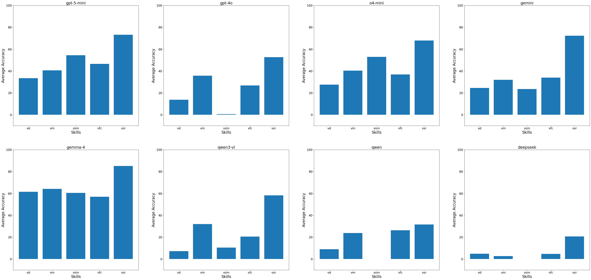
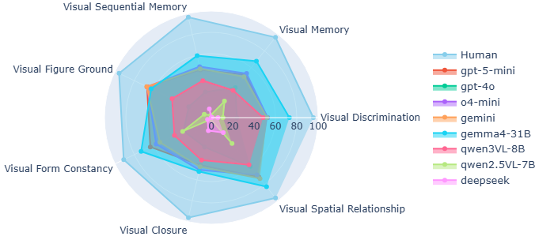
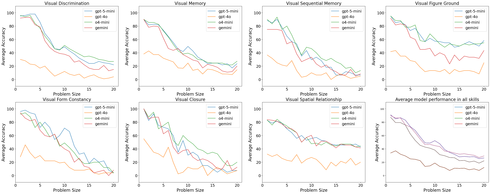
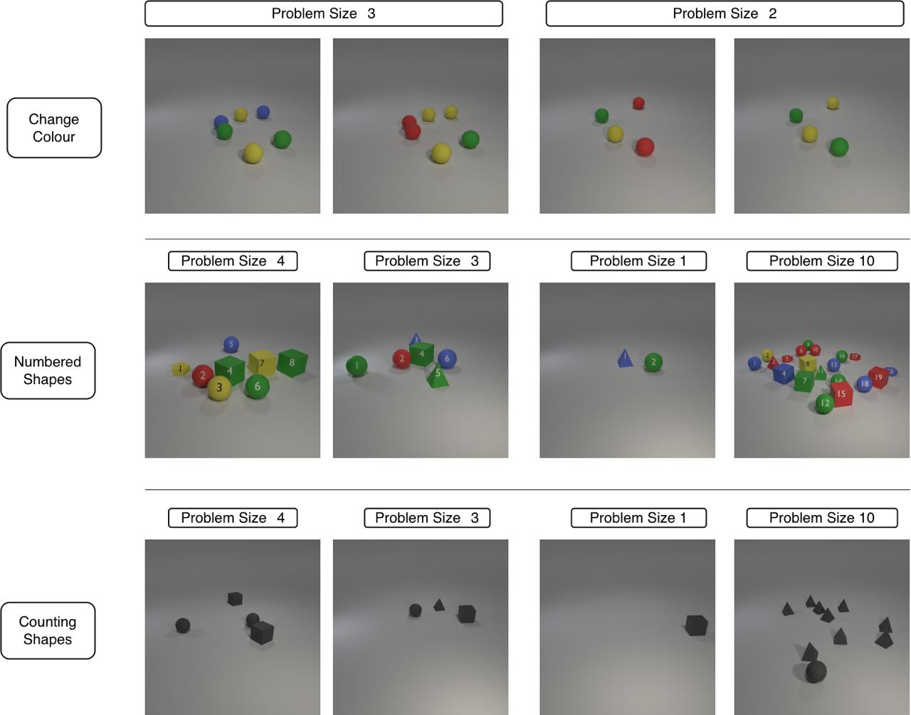
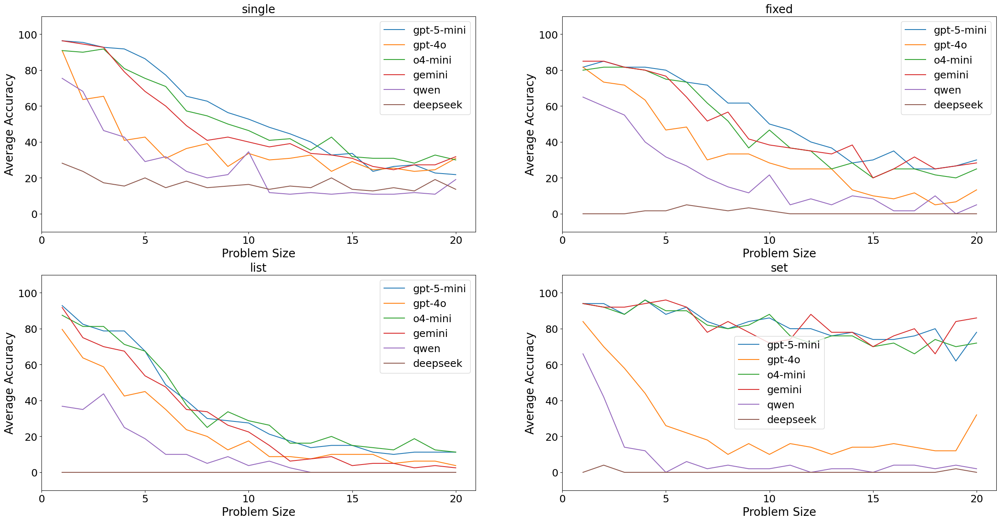

COLM 2026
Modern MLLMs solve olympiad maths from an image. They cannot reliably count ten circles. Percept-V isolates basic visual perception from reasoning and knowledge — and models fail.
Cognitive science research treats visual perception, the ability to understand and make sense of a visual input, as one of the early developmental signs of intelligence. Its TVPS-4 framework categorizes and tests human perception into seven skills such as visual discrimination, and form constancy. Do Multimodal Large Language Models (MLLMs) match up to humans in basic perception? Even though many benchmarks evaluate MLLMs on advanced reasoning and knowledge skills, there is limited research that focuses evaluation on simple perception. In response, we introduce Percept-V, a dataset containing 6000 program-generated uncontaminated images divided into 30 domains, where each domain tests one or more TVPS-4 skills. Our focus is on perception, so we make our domains quite simple and the reasoning and knowledge required for solving them are minimal. Since modern-day MLLMs can solve much more complex tasks, our a-priori expectation is that they will solve these domains very easily. Contrary to our belief, our experiments show a weak performance of SoTA proprietary and open-source MLLMs compared to very high human performance on Percept-V. We find that as the number of objects in the image increases, performance goes down rather fast. Our experiments also identify the perception skills that are considerably harder for all models. Fine-tuning an open-source MLLM shows considerable gains in performance, though the gains only marginally carry over to other related datasets, pointing to limitation in generalization abilities of the learned representations. Code and data are available at github.com/dair-iitd/Percept-V.
Every instance is a pair (Q, I): a domain-specific question prompt and a Python-generated image of simple geometric objects. Ground truth is computed during generation, so there is no annotation noise and no contamination. Each domain spans 20 problem sizes with 10 instances each — 200 per domain, 6,000 in total.
The Test of Visual Perceptual Skills is a standard clinical instrument for human perception. Its seven skills give the benchmark a construct that predates and is independent of LLMs.
Size 1–20 operationalises perceptual complexity: number of objects, grid dimension, distractors, or processing steps. This is what makes the scaling curves possible.
One script per domain, driven by --num_image and --num_size. Any size of dataset can be regenerated on demand with fresh, unseen images.
A domain may appear in several rows: solving its instances can require more than one skill.
Table 1. Domains using each skill. 17 domains test a single skill, 7 test two, and 6 test three jointly.
Each prompt specifies its output format explicitly so that scoring is automatic. Proprietary models comply almost perfectly — for them, errors come from perception rather than formatting. Open-weight models are noticeably worse: DeepSeek fails the format on 61.6% of fixed-length answers, and even Gemma-4 and Qwen3-VL slip on 4–15%.
| Type | Description | Domains |
|---|
| Type | GPT-5-mini | GPT-4o | o4-mini | Gemini | Gemma-4 | Qwen3-VL | Qwen2.5-VL | DeepSeek |
|---|
Filter by skill or answer type, then open a domain to see its exact prompt and a sample image at problem size 9.
No domain matches those filters.
Four proprietary models (GPT-5-mini, GPT-4o, o4-mini, Gemini 2.5 Flash) and four open-weight models (Gemma-4-31B-it, Qwen3-VL-8B-Thinking, Qwen2.5-VL-7B-Instruct, DeepSeek-VL2-Tiny), zero-shot, temperature 0. All except GPT-4o, Qwen2.5-VL and DeepSeek support “think with image”. Cells are shaded by accuracy; click a column header to sort.
Table 2. Comparison of MLLM performance across skills and domains (%), zero-shot.
Gemma-4, the strongest model, is still ≤50% on 9 of 30 domains. GPT-4o is ≤50% on 24, o4-mini on 17, and DeepSeek-VL2-Tiny scores exactly 0.0% on 16.
colours_present2.62% average — the hardest domain for every model. It only asks which of 20 named colours appear, with swatches and a legend provided. Humans get 90%; the best model gets 6.67%.
inside_circles91.0% average. A single red dot, some circles, one yes/no answer. When the task reduces to one object relation, models are fine — the difficulty is in holding many objects at once.
Open-weight Gemma-4-31B tops the table at 66.9%, and Qwen3-VL-8B edges past GPT-4o. Every thinking model outranks non-thinking GPT-4o; the two non-thinking open models trail far behind.
One panel per skill plus an average. Every model degrades monotonically as instances grow — the single most consistent pattern in the paper.

Three skills recur across the dataset outside the TVPS-4 taxonomy: counting (13 domains), OCR (9) and grid understanding (7). Counting and OCR degrade sharply with size; grid tasks stay nearly flat for reasoning models, plausibly a training-data effect. Counting is slightly harder for most reasoning models (GPT-5-mini: 47.7 counting vs 60.9 non-counting), but Gemma-4 is the exception — it is better on counting (70.5) than on non-counting (64.2). Either way, weak performance on non-counting domains shows that counting alone does not explain the failures.

Restricting to the 17 domains that require exactly one skill isolates skill difficulty. Visual Sequential Memory is the weakest skill for 4 of 8 models; Visual Spatial Relationship is the strongest for all of them. Only five skills appear — Visual Figure Ground and Visual Closure have no single-skill domains, and the number of domains per skill varies sharply (vsr: 6, vm: 5, vfc: 3, vd: 2, vsm: 1), so the columns are not equally reliable.

16 college students answered randomly selected questions spanning all 30 domains and all problem sizes. The models were evaluated on exactly the same samples under exactly the same protocol.
Table 3. Overall accuracy on the human-study samples. The gap to the closest MLLM,
Gemma-4-31B, is 26.7 points. On colours_present it is 90% versus 6.67%.

We build Percept-Vtrain — 60K samples, 2K per domain — and fine-tune Qwen2.5-VL-7B, varying which modules are trainable: the language model (L), the vision encoder (V), and the MLP projector (P) between them. Out-of-domain transfer is measured on CV-Bench and Color-Bench.
| LLM | Vision encoder | MLP projector |
Percept-V overall |
size 1–10 |
size 11–20 |
CV-Bench | Color-Bench |
|---|
Table 4. LoRA (rank 8) and full fine-tuning of Qwen2.5-VL-7B. LoRA ordering on Percept-V: (L+V) > (L+V+P) > (L) > (L+P) > (V+P) > (V) > (P).
18.1% → 84.3%. LoRA gets within 1 point of full fine-tuning, so the capability is a small, learnable delta rather than something the model fundamentally lacks capacity for.
CV-Bench moves 73.9 → 77.6 and Color-Bench 46.3 → 46.0. The model learns the tasks, not the perception. No catastrophic forgetting either.
Training it alone gives 49.2. Adding it to the best pair lowers accuracy (83.4 → 80.3). One MLP cannot absorb the mismatch between the two modalities.
That the projector is inert may imply models struggle to query, align and transform visual information, and motivates stronger interfaces between the vision and language modalities.
If models fail at counting circles, the natural objections are that the images are too small, too flat, or the prompts too odd. None of them hold.
One-shot prompting degrades every proprietary model. A short few-shot run with three examples on Gemini dropped average accuracy on Percept-V to 21.5%. Inspecting responses, models confuse the details of the in-context example with the problem to be solved, and hallucinate wrong theories after mis-perceiving the exemplar itself. Weak performance is therefore unlikely to be a task-understanding problem.
| Skill | GPT-5-mini | GPT-4o | o4-mini | Gemini |
|---|
Table 5. One-shot accuracy (%). Zero-shot averages of skills for reference: 54.77 / 29.26 / 53.63 / 52.27.

Percept-V images average 670×650 pixels. Upscaling 2× gives no benefit (GPT-5-mini 54.77 → 55.62; Qwen 14.64 → 15.01), so the information needed was already present — these are not failures of acuity. Downscaling 0.5× does hurt (−13.6 and −2.1), confirming the models genuinely read the images rather than guessing. The skills that suffer most under downscaling are exactly those requiring many small objects to be individuated at once.
| Skill | GPT-5-mini | Qwen2.5-VL | ||||
|---|---|---|---|---|---|---|
| Orig. | 2× | 0.5× | Orig. | 2× | 0.5× | |
Table 6. Accuracy (%) at original, 2× and 0.5× resolution.
A potential criticism of Percept-V is that its images are auto-generated and may not occur naturally in a model's training data. Would models do better on more realistic images? Six domains were rebuilt as 3D Blender scenes in the style of CLEVR — solid forms, naturalistic lighting, cast shadows — with 100 images each over sizes 1–10. Even at these small problem sizes, where 2D accuracy is comparatively high, 3D performance stays sub-par: GPT-5-mini gets worse on all six domains, falling 18 points overall. Qwen, already near its floor, gains slightly on the two counting domains, plausibly because shading separates adjacent objects that flat silhouettes leave ambiguous. Neither model improves where it would matter most: colours_present stays at 9.0 and 0.0. Photorealism redistributes difficulty rather than removing it.

| Domain | GPT-5-mini | Qwen2.5-VL | ||
|---|---|---|---|---|
| 2D | 3D | 2D | 3D | |
Table 7. Accuracy (%) on six domains rendered in 2D and 3D, matched on problem sizes 1–10.
The original prompts were paraphrased into concise and verbose styles. Average of skills moves by about one point for both models, and the original chain-of-thought style prompting is often the best of the three. Concise beats verbose for both.
| Skill | GPT-5-mini | Qwen2.5-VL | ||
|---|---|---|---|---|
| Concise | Verbose | Concise | Verbose | |
Table 8. Accuracy (%) across prompting styles.
Breaking accuracy down by answer type across problem sizes shows that thinking models (GPT-5-mini, Gemini, o4-mini) are relatively robust to size for the unordered set type, but not for the ordered list type. Producing an answer in the right order is a distinct challenge from producing the right elements.

@article{ghosh2025percept,
title={The Percept-V Challenge: Can Multimodal LLMs Crack Simple Perception Problems?},
author={Ghosh, Samrajnee and Agarwal, Naman and Garg, Hemanshu and Mittal, Chinmay and Singla, Parag and others},
journal={arXiv preprint arXiv:2508.21143},
year={2025}
}